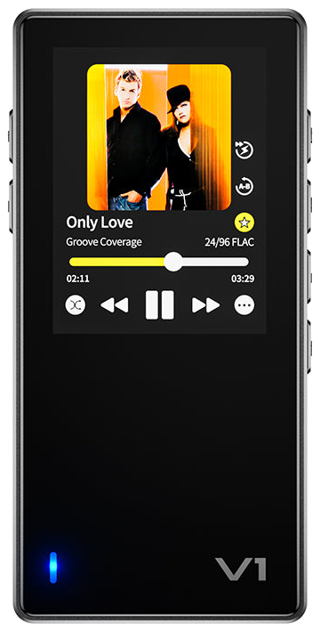

01 / SOUND
Sound, your way.
Make every listen yours with powerful tools for shaping and discovering sound.
- Subsonic / Gonic streaming
- Qobuz offline cache
- WebDAV & FTP network folders
- Listen Together Wi-Fi sync
Your music, ready when you are. Sonix takes your TempoTec V1 beyond stock 1.3 — shape the sound for the headphones you own, keep your library on the card, and rediscover what this little player can do.


THE V1, UNLOCKED
The essentials from Sonix, plus additions made for the V1. Built by the community, for the way you listen.
Make every listen yours with powerful tools for shaping and discovering sound.
From making beats to managing your library, the V1 has a few new tricks.
Little details, useful extras, and a little bit of fun along the way.
MADE FOR YOUR V1
This fork builds on upstream Sonix. Here are some of the additions and upgrades created for the V1—not the features it already shared with Sonix.
Play 16 pads, slice your own WAVs, overdub loops, add live filter, echo and drive, and record the mix to your card.
Host and join a shared stream over Wi-Fi to listen in sync on two V1 players.
Build an offline playlist from a track’s tags, then explore listening charts for the week, month, year and all time.
Meet a companion that grows as you listen, earns Musical Notes and develops its own character.
Stream from Subsonic, Gonic, Jellyfin and SoundCloud, or save music from WebDAV and FTP network folders.
Send local tracks from your V1 to compatible speakers and TVs on the same Wi-Fi network.
Watch V1-friendly MPEG-1 video with MP2 audio on the device, complete with touch seeking and side-key controls.
Choose V1-specific themes, custom palettes and icon sets, plus layouts like Vinyl, Poster and Immersive.
Edit supported music tags and look up album artwork over Wi-Fi, right on your player.
Check for releases over Wi-Fi, profile your battery and run a read-only SD card health benchmark.
Keep passwords in a PIN-locked, AES-256 encrypted vault on your microSD card, without a network account.
Use a compatible browser to edit PEQ presets, Tape Deck kits and playlists on a connected V1.
03 / THE UPGRADE
Sonix starts with the official V1 1.3 firmware and replaces the player and interface. The familiar device, with a lot more room to play.
GET TO KNOW SONIX ↗| CAPABILITY | STOCK 1.3 | SONIX FORK |
|---|---|---|
| Music playback | ● | ● |
| 10-band PEQ & AutoEq | — | ● |
| Subsonic / Gonic | — | ● |
| Tape Deck sampler | — | ● |
| Wi-Fi folder transfers | — | ● |
| Music Pet & games | — | ● |
READY WHEN YOU ARE
A little preparation goes a long way. Follow the steps below and keep your stock files safe.
Keep the official V1 v1.upt and its matching v1_md5.txt somewhere safe before you begin.
Download the latest Sonix v1.upt, place it at the root of your microSD card, and run the V1’s built-in firmware updater.
To revert, put the original vendor v1.upt and matching checksum file at the card root and run the same updater.
A NOTE ON SAFETY
For the TempoTec Variations V1 only. This is unofficial community firmware; read the full instructions and warnings before updating.
YOUR MUSIC, READY WHEN YOU ARE.
Try the interface in your browser, or take Sonix with you.